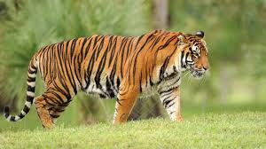
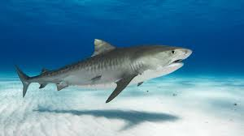
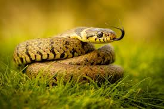

What is this website even about? This website is about 5 different animals
On this website you will have more knowledge about this animals
Lion
The lion (Panthera leo) is one of the most iconic big cats, known for its power, social behavior, and majestic appearance.
Native mainly to sub-Saharan Africa, with a small population in India’s Gir Forest, lions are unique among cats for living in social groups called prides, which typically include related females, their cubs, and a coalition of males. Male lions are easily recognized by their impressive manes, which can signal health and dominance, while females are the primary hunters, working cooperatively to take down prey such as zebras, wildebeest, and buffalo.
Lions communicate through roars, scent marking, and body language, with their roar capable of being heard up to several miles away. Although they are apex predators, lions face threats from habitat loss, human–wildlife conflict, and declining prey populations, making conservation efforts critical to their survival.
The lion (Panthera leo) is a muscular, deep-chested big cat celebrated as a symbol of strength across many cultures. Adult males typically weigh 150–250 kg (330–550 lb), while females are smaller at 120–180 kg (265–400 lb).
Lions prefer savannas, grasslands, and open woodlands, where visibility helps them hunt and defend their territory. Their social structure is complex: prides often include a core group of related females who stay together for life, while male coalitions—usually brothers—compete for control of the pride, sometimes taking over by challenging resident males. Lions are mostly nocturnal and rely on stealth, teamwork, and bursts of speed to capture prey.
Cubs are raised cooperatively within the pride, but face high mortality due to predators, starvation, and infanticide by incoming males. Lions also have strong cultural and historical significance, appearing in ancient art, mythology, and folklore around the world. Despite their fame, wild lion populations have declined dramatically over the past century, and the species is currently listed as Vulnerable, with some regional populations considered Endangered. Conservation measures include protected habitats, anti-poaching efforts, conflict-mitigation programs with local communities, and scientific monitoring to support long-term survival.
This is example of how lioness hunts its prey
Tiger

The tiger (Panthera tigris) is the largest of all wild cats and a powerful solitary predator known for its striking orange coat with black stripes. Native to Asia, tigers historically ranged from Turkey to eastern Russia, but their populations are now fragmented, with major subspecies including the Bengal, Siberian,
Indochinese, Malayan, South China (critically endangered and possibly extinct in the wild), and Sumatran tiger.
Tigers prefer dense forests, mangrove swamps, and grasslands where cover helps them stalk prey such as deer, wild boar, and buffalo. Unlike lions, tigers live and hunt alone, marking large territories with scent and deep vocalizations called “chuffs” or roars.
They are strong swimmers—often bathing to cool off and even hunting in water. Cubs are raised solely by their mothers and stay with her for up to two years as they learn essential hunting skills. Tigers hold deep cultural significance in Asian folklore, symbolizing courage, protection, and power. Despite their iconic status, tigers are endangered due to habitat loss,
poaching for the illegal wildlife trade, and declining prey populations. Conservation programs focus on habitat protection, anti-poaching patrols, community-based initiatives, and international efforts to curb illegal trade in
tiger parts, all aimed at ensuring the species’ long-term survival.
Tigers are the largest members of the cat family, with Siberian tigers being the biggest: males can weigh up to 300 kg (660 lb) and measure more than 3 meters (10 ft) from nose to tail. Their coat features unique stripe patterns—no two tigers share the same design, much like human fingerprints. Their night vision is about six times better than that of humans, enabling them to hunt effectively in low light.
This is example of how tiger hunts its prey
Wolf
The wolf (Canis lupus) is a highly intelligent and social carnivore known for its complex pack structure, adaptability, and ecological importance. Wolves were once the world’s most widely distributed land mammals, living across North America, Europe, Asia, and parts of the Middle East. They typically inhabit forests, tundra, grasslands, mountains, and sometimes deserts. Wolves have powerful bodies, sharp senses, and strong jaws capable of exerting high bite force—adaptations that make them skilled hunters.
They have strong bodies, long legs, and thick fur that can be gray, white, black, or brown, helping them survive harsh climates. As apex predators, wolves hunt cooperatively, using endurance and teamwork to bring down large prey such as deer, elk, and moose, while also relying on smaller animals when necessary. Communication is vital to their social life—wolves howl to coordinate with pack members, defend territory, or signal their presence, and they also use body language and scent marking to maintain social order.
They typically raise litters of four to six pups each year, with the entire pack helping to feed and protect them. Wolves play a critical role in maintaining ecosystem balance by controlling herbivore populations and supporting biodiversity. Although once widespread, wolf populations have declined in many regions due to habitat loss, hunting, and conflict with humans, making conservation efforts essential for their long-term survival.
This is example of how wolf hunts its prey
shark

Sharks are a diverse group of cartilaginous fish belonging to the class Chondrichthyes, known for their streamlined bodies, powerful senses, and vital role in marine ecosystems. There are over 500 species of sharks, ranging from the tiny dwarf lantern shark, only about 20 cm long, to the enormous whale shark, which can reach lengths of over 12 meters.
Sharks have skeletons made of cartilage rather than bone, making them lighter and more flexible in the water. They possess multiple rows of replaceable teeth, and many species can lose and regrow thousands of teeth in their lifetime. Their sensory abilities are extraordinary: sharks can detect the faintest vibrations through their lateral line system, smell tiny amounts of blood from kilometers away, and even sense electrical fields produced by other animals using special organs called the ampullae of Lorenzini.
Sharks inhabit oceans around the world, from shallow coastal waters to the deep sea, and their diets vary widely depending on the species. Some, like great white and tiger sharks, are apex predators that feed on fish, seals, and other marine life, while others, such as whale sharks and basking sharks, are gentle filter feeders that consume plankton. Despite their fierce reputation, sharks are generally not a danger to humans, and most species avoid contact entirely.
Sharks reproduce in several ways—some lay eggs, others give live birth, and many exhibit slow growth and low reproduction rates, which makes them especially vulnerable to population declines. Today, many shark species face serious threats from overfishing, habitat loss, and the global fin trade. As top predators, sharks help regulate marine food webs, and their decline can disrupt entire ocean ecosystems, making conservation essential for maintaining healthy seas.
This is example of how sharks attack its prey
Snake

Snakes are legless reptiles belonging to the suborder Serpentes, found on every continent except Antarctica. They vary greatly in size, from tiny thread snakes measuring only a few centimeters to the massive green anaconda and reticulated python, which can exceed 7 meters in length. Snakes have elongated bodies, covered with scales,
and lack limbs, eyelids, and external ears. They are carnivorous predators, feeding on a wide range of animals including rodents, birds, eggs, amphibians, and other reptiles. Depending on the species, snakes may kill
prey by constriction (squeezing it to death) or by venom, which immobilizes or digests the prey.
Snakes are highly adapted for their environments. They can sense vibrations through the ground and, in some species, detect heat from warm-blooded prey using specialized pit organs. Reproduction varies: some snakes lay eggs (oviparous), while others give birth to live young (viviparous). Many species are solitary and secretive, though mating seasons may bring them together.
Ecologically, snakes are crucial for controlling pest populations, maintaining balance in ecosystems, and serving as prey for larger predators. While some venomous species pose risks to humans, most snakes are harmless and avoid contact. Unfortunately, habitat destruction, hunting, and the pet trade threaten many snake populations, making conservation efforts important to protect these fascinating reptiles.
Tires
Tires are circular, flexible components that fit around the wheels of vehicles to provide traction, absorb shocks, and enable smooth movement over various surfaces. They are made primarily from rubber, reinforced with materials like fabric, steel, and synthetic compounds to enhance durability and performance. Tires play a crucial role in vehicle safety, handling, and fuel efficiency, and they are designed differently depending on the type of vehicle and driving conditions.
.jpg)